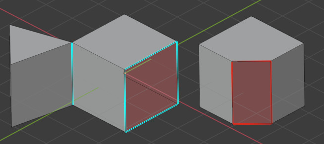

Blender can be used to created meshes for 3D printing.
Meshes exported from Blender are usually imported into a piece of software
takes the mesh and “slices” it into paths that the 3D printer can execute.
An example of such Slicer
software is Cura.
In order to correctly slice a mesh, it needs to be “watertight”,
meaning that the surface is closed everywhere. Additionally,
there should be no edges or faces sticking out.
3D Print Toolbox helps you analyze problems in your mesh that could cause slicing issues.
It can be found in 3D Viewport ‣ Sidebar ‣ 3D-Print, when a mesh is selected.
A number of different checks can be performed to analyze
in which ways your mesh might be invalid for use with a Slicer.
Upon execution of one of the checks, the Result field shows which, if any, parts of your mesh are invalid.
When in Edit Mode, clicking these results selects these parts of your mesh.
You can use View Selected Backslash to focus on these parts.
Although Slicers are becoming increasingly tolerant when it comes to “tidiness”
of meshes, it is always worth trying to provide as clean a mesh as possible.
Solid
Checks for Non-Manifold edges and Bad Contiguous edges.
Edges should connect to exactly 2 faces. In it connects to only one,
it means there’s a hole in the mesh. More is also not allowed. These edges are considered Non-manifold.
If one of the faces’ normals is pointing in a different direction than its neighbors,
its edges are marked as “Bad Contiguous”.
In this screenshot, the left shape has a hole, and the right shape has one of its faces flipped.

Left, marked in blue: Non-manifold edges. Right, marked in red: Bad contiguous edges.
Intersections
These two cubes have intersecting faces. A Boolean modifier would help in this example.
It’s worth noting that some slicer applications can deal with this,
so it’s not always required to resolve this issue.
Degenerate
Faces and edges which have 0 area or length, are considered degenerate.
In this example, the top face of a cube has been scaled down to 0,
but have not been merged. A Merge ‣ By Distance would resolve this issue.
The vertices of a quad or ngon can be folded in such a way that the face is not flat.
In practice, quads are rarely ever flat. When exporting, these faces are converted to triangles.
If the surface is excessively deformed, this can result in unexpected shapes.
In this example, a quad has been folded into a saddle-like shape.
This triggers the Distorted check. It would be best to triangulate by hand here.
Faces that form very thin geometry might be missed entirely by the slicer. Such faces are marked as Thin.
Edge Sharp
Similar to Thickness, sharp edges can thin pieces of geometry which might be missed by the slicer
Overhang
As 3D printers can’t print in mid-air, parts of the model which overhang will not print correctly.
In practice, slicers can add additional material, support, to anticipate for overhanging layers.
Check All
Performs all of the above checks at once. In this example, Suzanne shows quite a few problems.
This is because the eyes are separate parts, and the sockets have holes.
This makes the mesh not Solid and Intersecting. Some of the faces are Distorted.
Triangulates the faces which are considered Distorted, as explained above.
Make Manifold
Attempts to fix various problems which might make a mesh non-manifold,
such as by fixing bad normals, filling holes, and removing empty edges and faces.